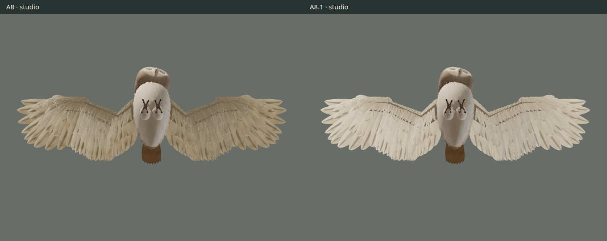
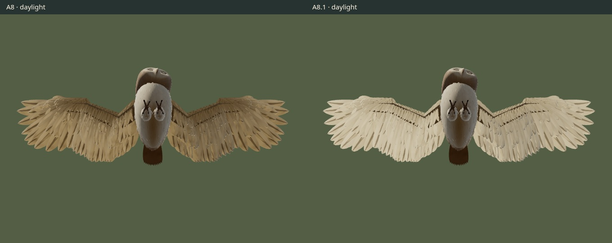
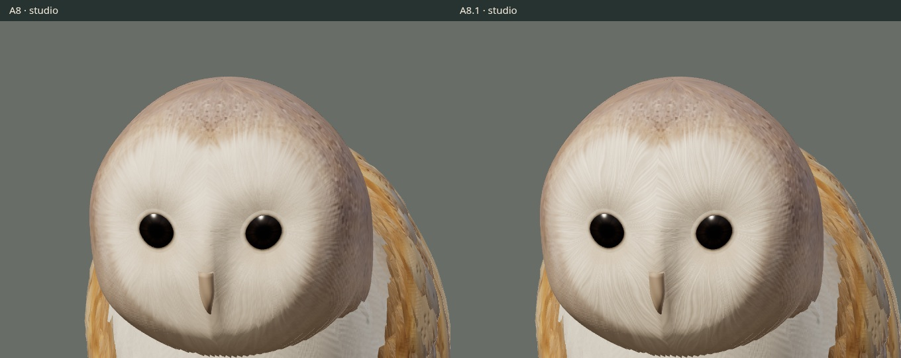
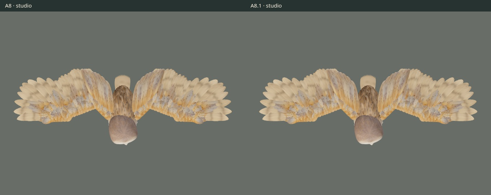
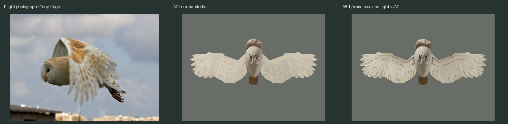

Integration readiness report · Hardware population benchmark · Five animation tests · A8 buffer and contact checks





A8 previously measured 151.8 ms at LOD0 against A7’s 122.2 ms, a 24.2% increase. The original run kept 54,396 triangles, 14 draws and about 0.1 ms median animation time. A8 added mip-filtered height relief, per-pixel roughness, wing-edge discard, optics and a thickness-dependent transmission term. The new experiment switches off one shader feature at a time and repeats the original camera, flight pose, resolution and readback method.
| LOD0, SwiftShader | Median (ms) | Range of run medians (ms) |
|---|---|---|
| A7 | 132.3 | 124.6–157.7 |
| A8 | 145.8 | 139.7–161.3 |
| A8 without fringe | 162.2 | 153.7–164.5 |
| A8 without relief | 147.5 | 140.2–152.6 |
| A8 without transmission | 143.3 | 133.3–148.1 |
| A8.1 | 152.9 | 139.1–168.5 |
Each row summarizes three ordered runs of 42 timed frames. The software renderer is sensitive to load. Differences between individual ablations overlap across runs, so these data cannot assign the historical regression to one operation or predict hardware frame time.
At 680 × 510, disabling the wing-edge discard changed fewer than 0.3% of owl pixels by more than 8/255 in any channel across the face and two wing plates. A8.1 removes that operation. Disabling transmission crossed the same threshold on 77.85% of the underside. A8.1 keeps it, with stronger transmission through thin distal webs and a paler tint. Height relief changed the face more than either wing plate on average. It stays on the close specimen to preserve fine surface response. The radial correction adds no shader work. The optic and roughness terms were not individually timed. All three LODs retain A8’s position, index and morph buffers.
SwiftShader raw timings · Image differences by feature
The benchmark covers all five population sizes at any selected LOD. Its software smoke check produced 14, 70, 140, 350 and 700 draws with 1, 5, 10, 25 and 50 visible owls respectively. The hardware entry point rejected SwiftShader. This environment exposed no hardware GPU, so target-device population limits remain open.